Avant que l'aventure ne commence, faisons connaissance avec les 30 canards qui en sont les héros…
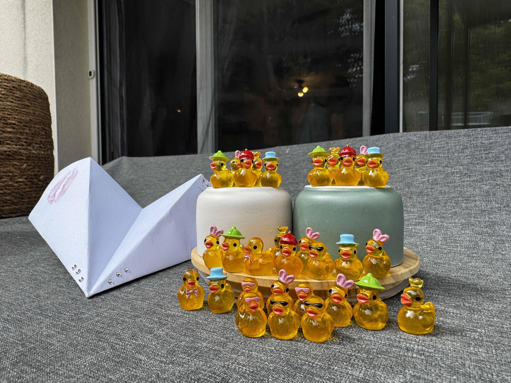
C'était un soir paisible au Royaume de Coinville. Les quatre rois — Édouard le Magnifique, Théodore le Sage, Léopold le Brave et Alphonse le Juste — festoyaient ensemble au Palais des Nénuphars pour célébrer la saison des moustiques gras. Les rires résonnaient, le pain de mie trempé coulait à flots, et personne ne remarqua les six ombres qui se glissaient entre les roseaux.
Don Colvert ajusta son chapeau de feutre et fit un signe du bec. Beccassino et Palmipaldi surgirent par la porte de service, tandis que Donna Barbota, Malvina la Cane et Canardella neutralisaient les gardes royaux avec un numéro de danse si envoûtant que les pauvres soldats en oublièrent de garder les yeux ouverts.
En moins de temps qu'il n'en faut pour dire « coin », les quatre rois furent fourrés dans des sacs de jute estampillés « Graines Bio — Rien à déclarer » et chargés sur une barque silencieuse.
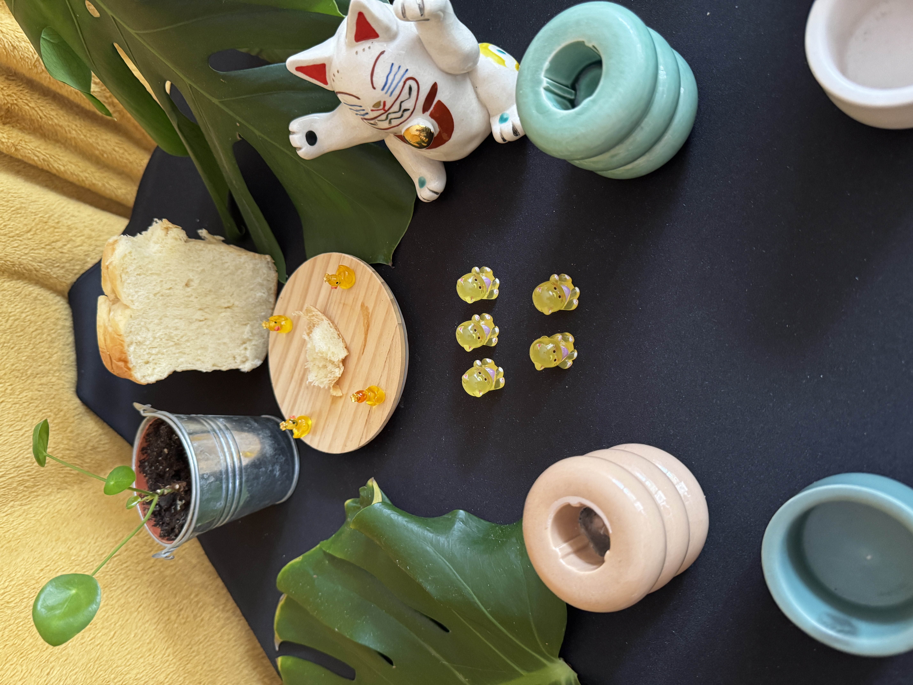
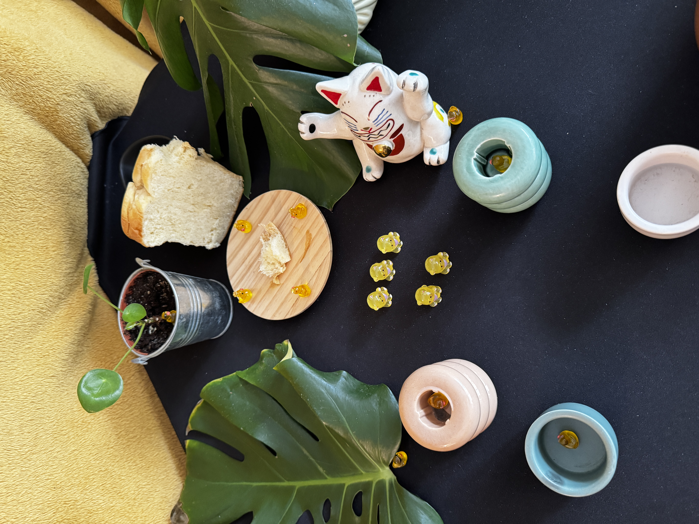
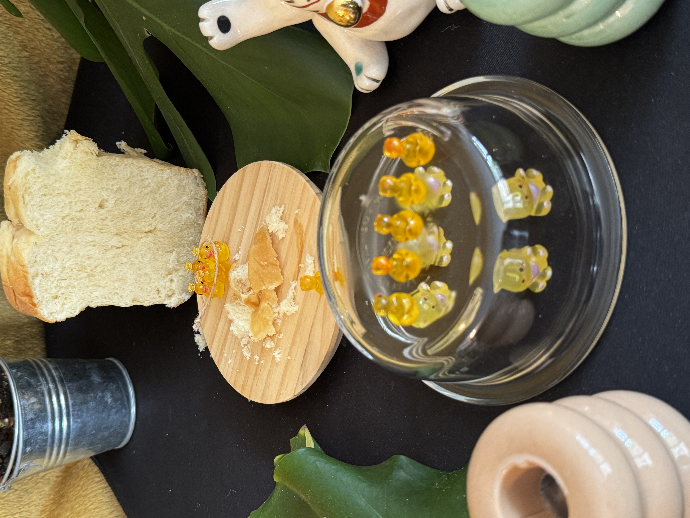
Au petit matin, ce fut la panique générale. Le conseil des mares convoqua immédiatement les meilleurs enquêteurs du royaume.
Sherlock Coins arriva le premier, loupe en main, reniflant chaque brin d'herbe. « Élémentaire, mes chers coins. Ces traces de palmes mènent vers le nord. Et cette odeur… c'est du pain d'épice industriel. Seul Don Colvert en mange. »
Plumeau Poirot lissa sa moustache. « Il faut de la méthode, mes amis. Pas de précipitation. Chaque miette raconte une histoire. »
Magret Maigret s'alluma une pipe imaginaire (les vraies étant interdites dans les zones humides protégées) et grommela : « Moi, je connais la chanson. La Mafia des Plumes ne court jamais bien loin. Ils planquent toujours leurs prises en altitude, là où aucun canard sensé n'irait nager. »
Colvert Columbo, en retard comme toujours, débarqua avec son imperméable froissé. « Oh, excusez-moi, juste une dernière petite question… Est-ce que quelqu'un a vérifié si les rois avaient leur téléphone sur eux ? Non ? Ah, dommage. »
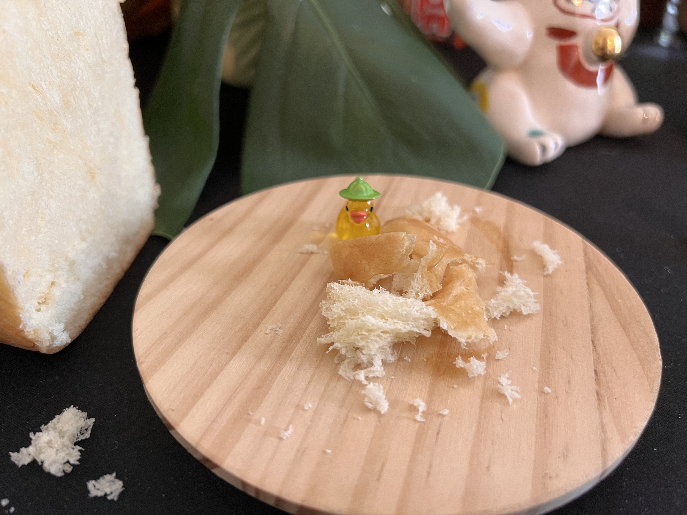
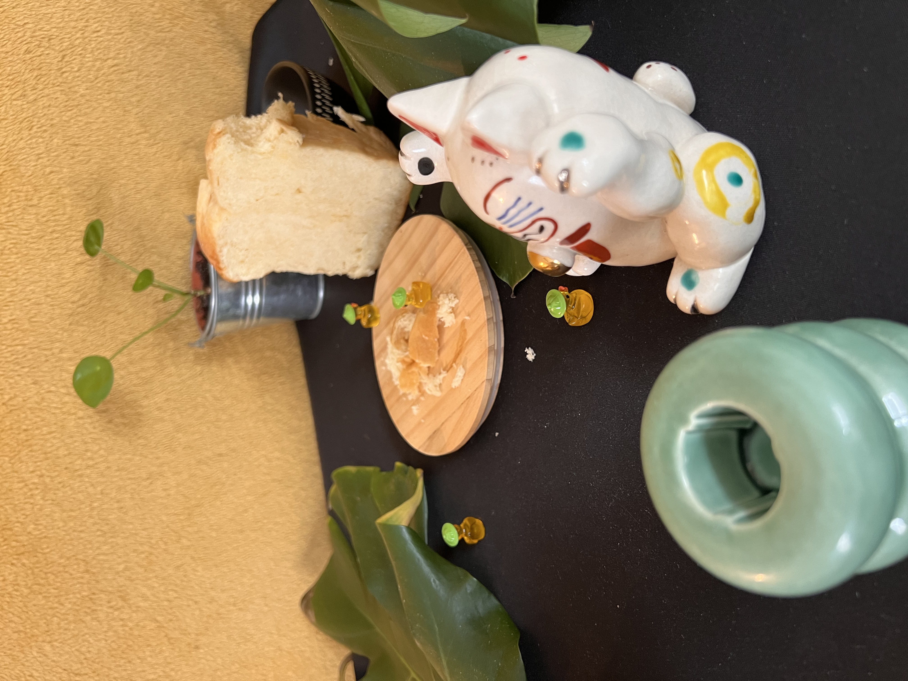
Pendant ce temps, au QG ultra-secret des Totally Spies Canard (un buisson de houx équipé de Wi-Fi), l'alerte rouge venait de retentir.
Plumia rassembla son équipe en un clin d'œil. « Mesdames, la situation est critique. Les rois ont été enlevés. Les détectives sont sur le coup, mais ils avancent à pattes de canard — littéralement. On va prendre les devants. »
Barbotine, la hackeuse, avait déjà piraté le GPS de la barque des mafieux. « Leur signal s'est perdu au pied de la Grande Montagne du Bec Pointu. » Canardine enfila ses gants de combat. Palmipette vérifia sa mallette de déguisements. Duvette fit trois saltos pour s'échauffer. Cancane chargea ses fausses identités sur une clé USB étanche. Coinnette remplit ses poches de bombes à confettis.
« En route, les filles ! » lança Plumia. Et les sept agents spéciaux s'envolèrent vers la montagne.
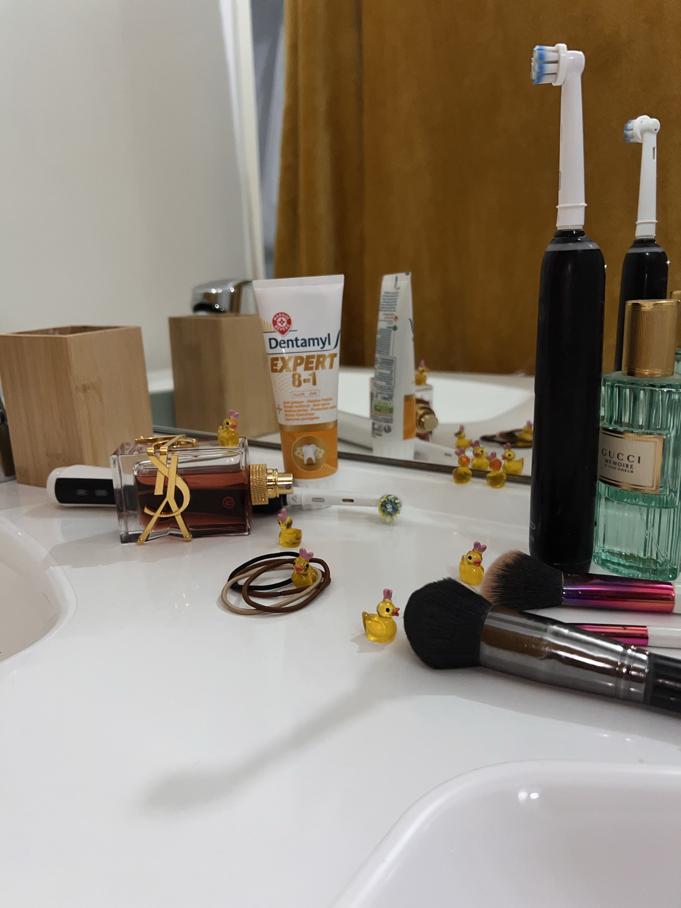
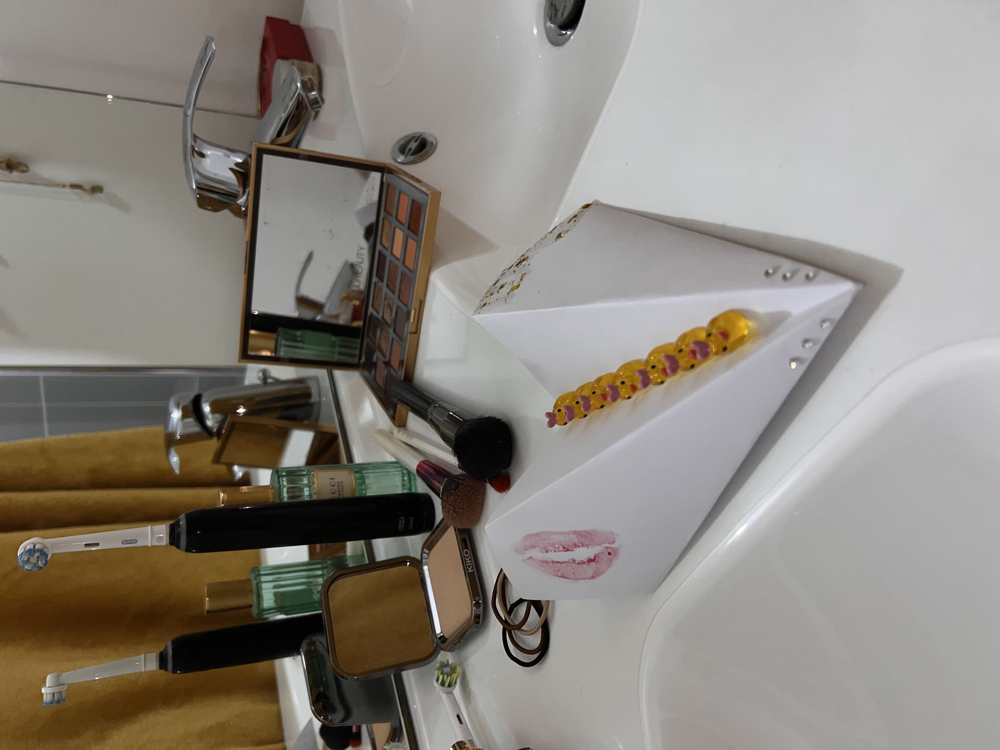
Les détectives progressaient par voie terrestre. Et le chemin n'allait pas être de tout repos.
À la lisière de la Forêt des Fougères Géantes, Sherlock Coins s'arrêta net. Devant eux, trois hippopotames de la taille de camionnettes se prélassaient en travers du sentier, mâchonnant des nénuphars comme des chips.
« Excusez-moi, vous bloquez le passage », tenta poliment Plumeau Poirot. Le plus gros hippopotame ouvrit un œil. « Et alors ? On est chez nous ici, les piafs. » Colvert Columbo s'approcha d'un air distrait et obtint l'information : les sacs suspects étaient passés par la Vallée des Échos, direction la montagne.
À peine les hippopotames dépassés, les détectives tombèrent nez à bec avec un troupeau de dinosaures. Trois diplodocus broutaient les cimes des arbres tandis qu'un tricératops grattait le sol d'un air grognon. Le tricératops leur bloqua la route. « Mot de passe ! » — « … Tournesol ? » tenta Columbo. « Coin-rrect ! Passez. »
Plus loin, une bande de lutins géants — trois fois la taille d'un canard — jouaient aux cartes en riant bruyamment. Ils confirmèrent : des types louches étaient passés avec des gros sacs, direction le sommet.
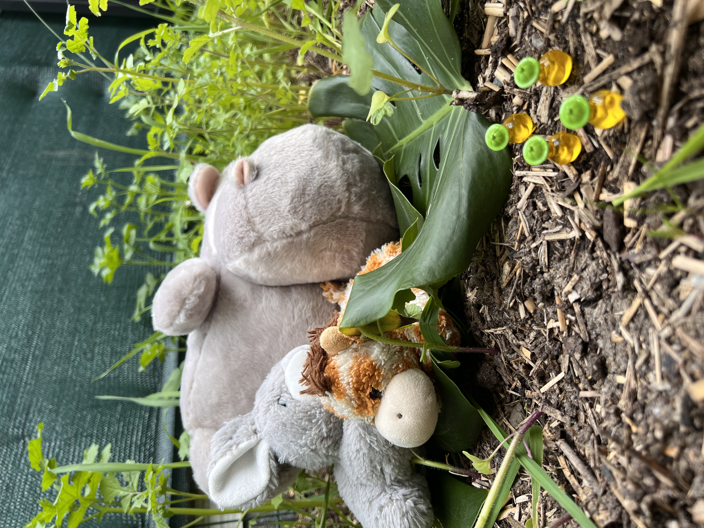
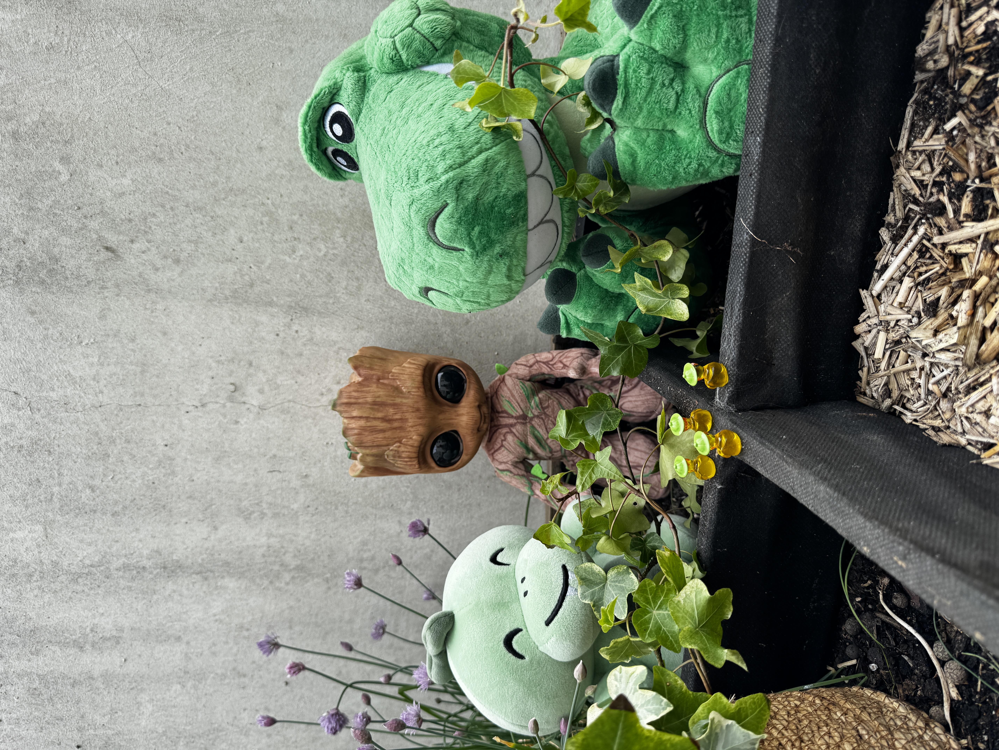
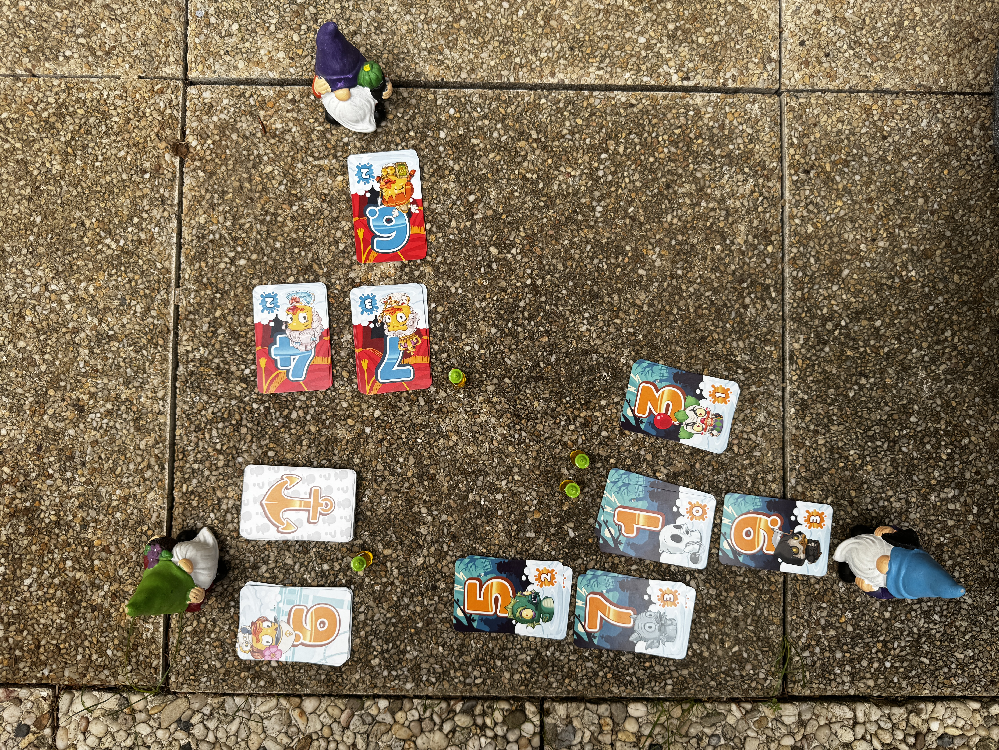
La Grande Montagne du Bec Pointu se dressait devant eux, couverte de neige et de mystère. Et c'est là que les détectives croisèrent les trois canards de montagne.
Flocon déboula sur ses skis dans un nuage de poudreuse et s'arrêta pile devant Sherlock Coins. « Salut les gars ! Vous montez ? » Crampon, suspendu à la paroi rocheuse, cria d'en haut : « Il y a du mouvement au sommet ! J'ai vu de la lumière dans la grotte des Stalactites Dorées ! »
Avalanche, qui redescendait en snowboard, confirma : « Y a des types chelous là-haut. Six canards avec des lunettes noires et des costards. Ils gardent l'entrée d'une grotte. »
Crampon leur traça un itinéraire d'escalade, Flocon leur prêta des raquettes, et Avalanche promit de créer une diversion en déclenchant une mini-avalanche de confettis si nécessaire.
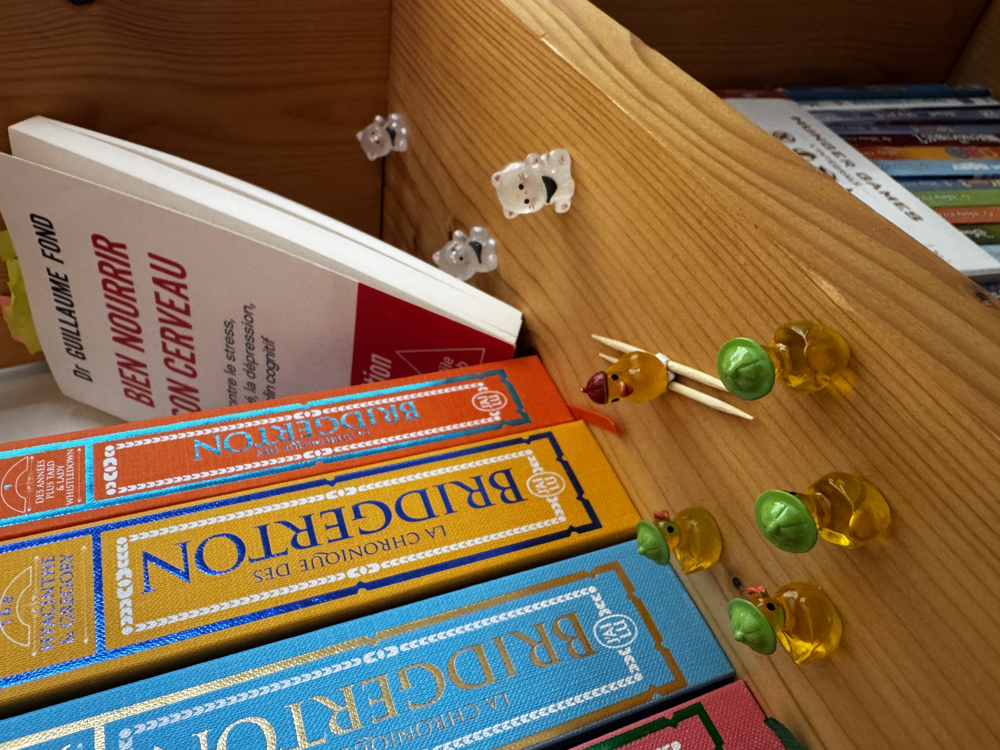
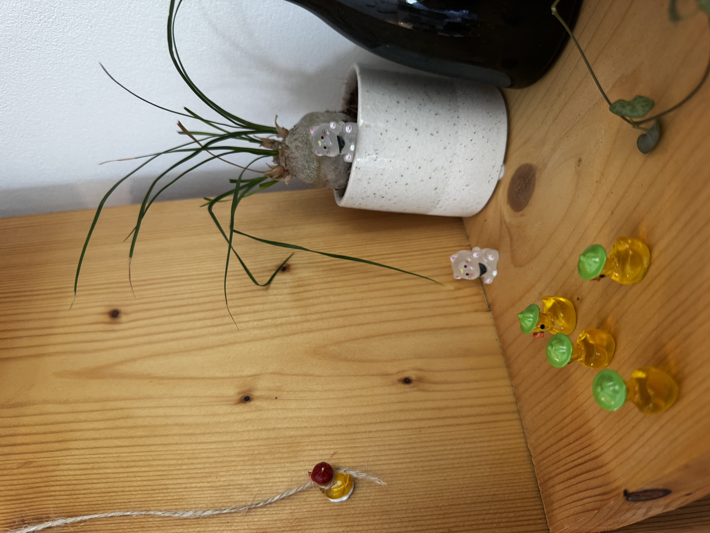
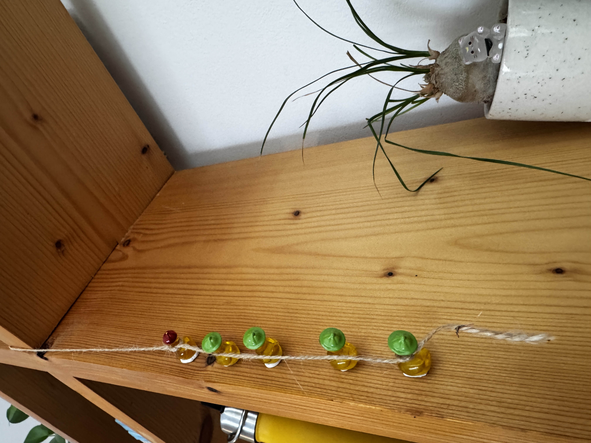
Les Totally Spies arrivaient par le versant opposé. Barbotine avait capté les fréquences radio de la mafia. « Don Colvert perd patience. Il menace de teindre les plumes du Roi Léopold en rose fluo si la rançon n'arrive pas. »
Le plan se mit en marche. Palmipette, déguisée en livreuse avec une fausse moustache et une casquette, se présenta à l'entrée de la grotte. « Livraison spéciale ! 40 millions de graines de tournesol ! » Palmipaldi ouvrit la porte, méfiant. Malvina le poussa : « Laisse-la entrer, imbécile. L'argent, c'est l'argent. »
Pendant que Canardella vérifiait les sacs (remplis de cailloux peints en noir — merci Coinnette), les détectives et les Totally Spies surgirent de partout. Sherlock Coins par la porte principale ! Magret Maigret par la fenêtre ! Canardine en rappel depuis le plafond ! Duvette en triple salto par la cheminée ! Plumeau Poirot par la porte de derrière, sans un cheveu de travers !
Don Colvert tenta de fuir, mais Colvert Columbo l'attendait tranquillement à la sortie, adossé au rocher. « Oh, une dernière petite chose, Don Colvert… Vous êtes en état d'arrestation. » Coinnette lança ses bombes à confettis et, dans la confusion scintillante, Barbotine coupa les liens des quatre rois.
Édouard le Magnifique se leva, secoua ses plumes royales et déclara : « Nous avons été royalement ennuyés. Qu'on juge ces malfrats ! »
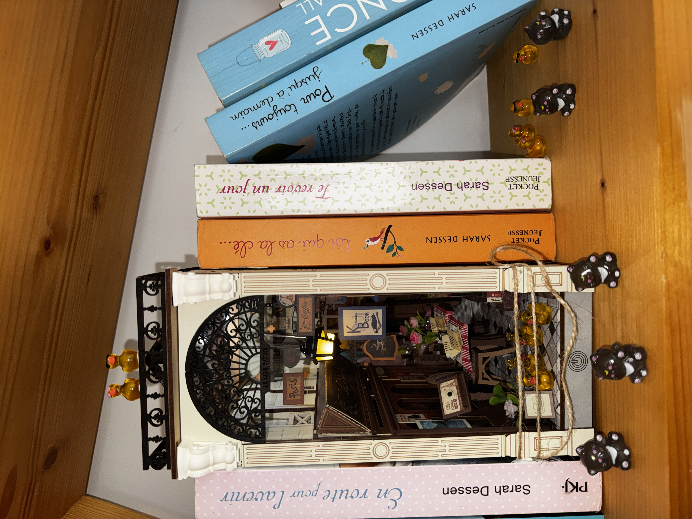
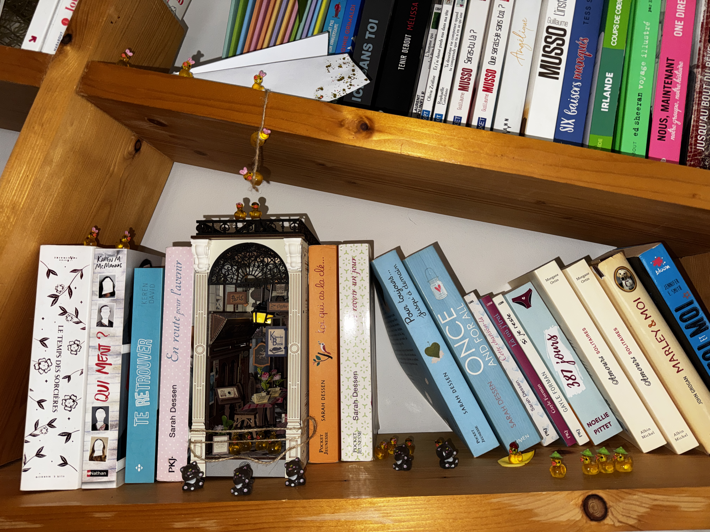
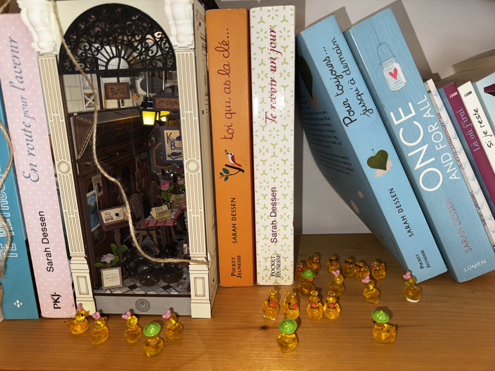
Trois jours plus tard, le tribunal de Coinville ouvrit ses portes pour le procès du siècle. Tout le royaume s'était déplacé. Les grenouilles vendaient du pop-corn. Les libellules assuraient la retransmission aérienne.
Le Juge Canardeau le Sévère frappa son marteau trois fois. « Silence dans la mare ! Le procès de la Mafia des Plumes est ouvert. » La Juge Marbec, à ses côtés, ajusta ses lunettes et ouvrit le dossier, épais comme un dictionnaire.
Maître Jugulaire, le procureur, se leva. « Les accusés ont commis le crime le plus odieux de l'histoire de Coinville. Ils ont exigé 40 millions de graines de tournesol ! Quarante millions ! Savez-vous combien de pique-niques cela représente ? »
Maître Becdur, avocat de la couronne, présenta les preuves : les sacs de jute, le mot de rançon, et un reçu de pain d'épice industriel au nom de Don Colvert.
Maître Plaidcanard fit de son mieux pour la défense. « Mon client est un incompris. C'est un artiste. L'enlèvement était… une performance artistique. Un happening ! » Le Juge Canardeau ne fut pas convaincu. « Un happening à 40 millions de graines ? »
Maître Palme d'Or livra un plaidoyer flamboyant pour les parties civiles. « Quatre rois privés de leur dignité ! Quatre couronnes jetées dans la boue ! La justice doit être exemplaire ! »
Les six mafieux furent condamnés à un an de travaux d'intérêt général : nettoyer les mares, distribuer du pain aux canetons, et écrire une lettre d'excuses de 500 mots — chacun — aux quatre rois. Don Colvert, en prime, fut condamné à renoncer au pain d'épice industriel pendant six mois.
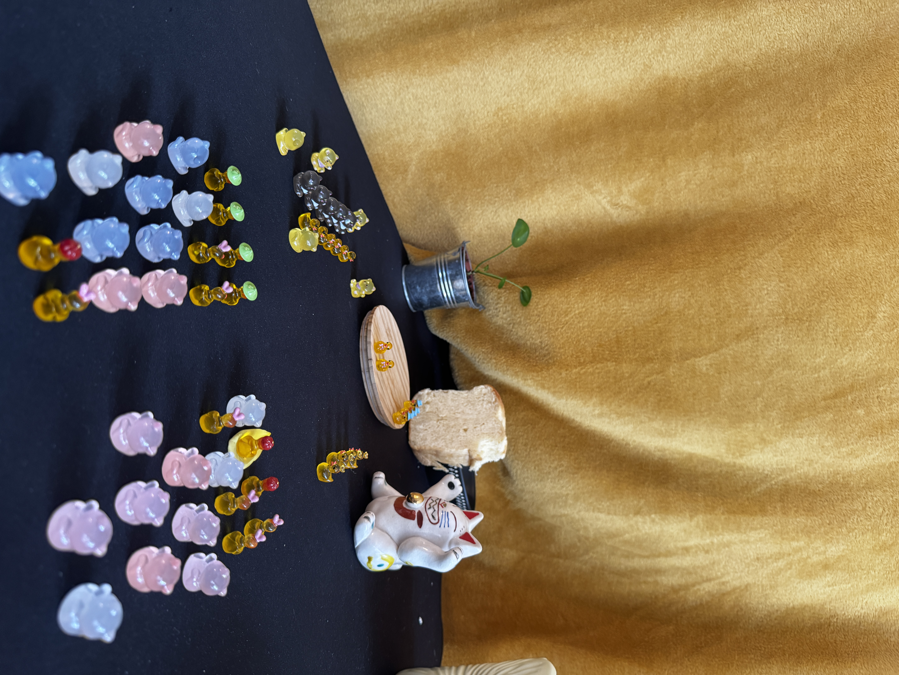
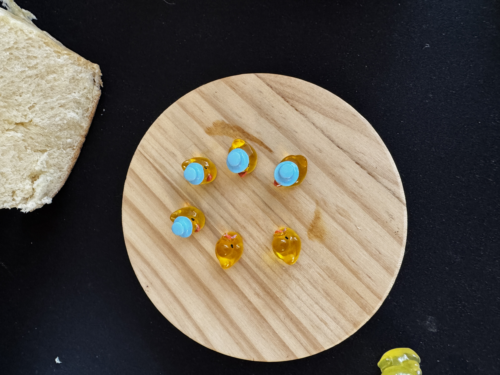
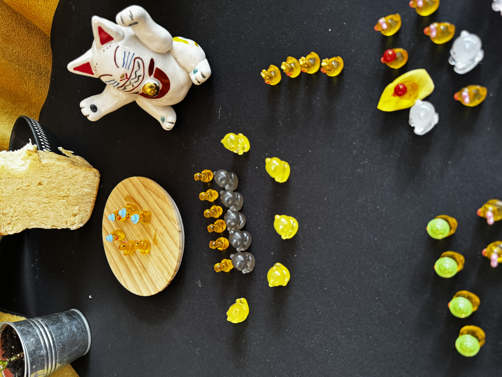
Ce soir-là, tout Coinville célébra. Les quatre rois retrouvèrent leurs trônes. Les détectives furent décorés de la Médaille du Bec d'Or. Les Totally Spies reçurent la Palme de Bravoure. Les trois canards de montagne furent nommés Gardiens Officiels du Bec Pointu. Et même les hippopotames, les dinosaures et les lutins géants furent invités à la fête.
On dansa, on chanta, on mangea du pain de mie jusqu'à l'aube.
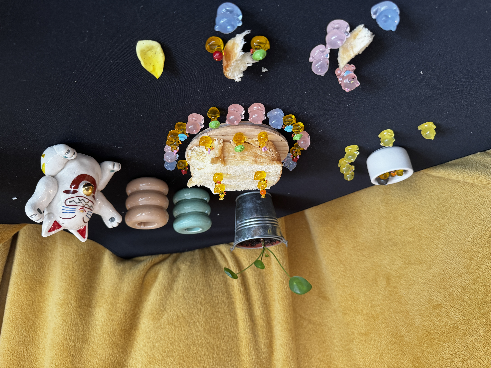
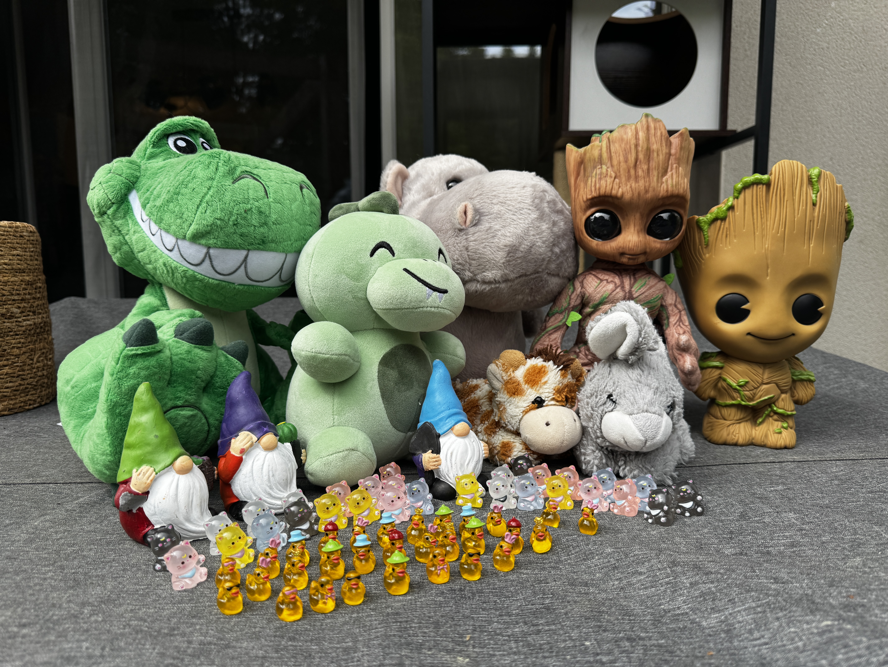